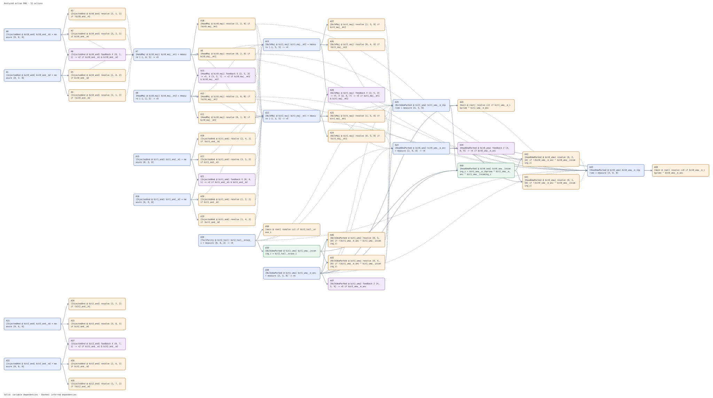

Actions¶
Blocks and pipes describe the geometry layout of the surface code computation. Actions name logical measurements, combine their results, and use those values to choose a measurement basis, apply a Pauli correction, or keep a shot. Bloq derives the physical readout recipes and their dependencies during compilation.
Action kinds¶
Action |
BLOG example |
Effect |
|---|---|---|
Named measurement |
|
Name a logical observable on a block or spatial pipe |
Binding |
|
Name a Boolean expression |
Resolve |
|
Select a measurement basis or a branch geometry |
Pauli feedback |
|
Apply a logical correction at a block or wire target |
Discard |
|
Reject the shot when the condition is true |
Targets refer to the authored spacetime layout. A block reference can be its
ID or coordinate, such as [0, 0, 1]. A pipe reference adds a direction from
one endpoint, such as [0, 0, 1] -> +X. These coordinates identify logical
geometry, while the compiler determines physical qubits and execution times.
Named measurement¶
name = measure target names a logical observable already measured by the
geometry. Its value is a bit: zero for eigenvalue \(+1\) and one for eigenvalue
\(-1\).
For a block target, the patch terminates at a measured top face, facing
forward in time. The observable has a correlation surface whose support at
that face agrees with its measurement basis. For example, an XZX cube has
an X top face, so mx = measure block_id names its logical X measurement.
Fixed X and Z caps and a terminal Y block supply their corresponding
bases. A selective cap supplies the basis chosen by its resolve action.
A block with a continuing temporal wire does not become a terminal measurement
merely because a measure statement names it. Ports and T resources are not
block measurement targets.
For a pipe target, the pipe must be spatial, along X or Y. It represents
lattice surgery between patches. The named observable is the joint parity
whose correlation surface crosses that pipe in the surgery measurement basis.
For an ordinary pipe, this is the Pauli basis complementary to its time face.
For example, the spatial pipe between the two XZX cubes in the T example
below measures \(Z\otimes Z\), even though its direction is +X. The direction
locates the pipe and does not specify the Pauli basis. Hadamard pipes exchange
the endpoint frames, so their support must be interpreted in each local frame.
Temporal pipes continue a patch and cannot be named parity measurement targets.
The named value combines physical records, signs, frame terms, and the decoder’s flip estimate. Conditions use this corrected logical value. Bloq must find an output safe readout in every reachable choice. Naming a relation that touches a live output does not authorize measuring that output. See Correlation Surfaces for the readout closure rule.
Binding¶
odd = m1 ^ m2 gives a name to a Boolean expression. It has no block or pipe
target and adds no quantum operation. Its inputs can be named measurements,
other bindings, or declared classical module inputs.
Operator, from highest to lowest precedence |
Meaning |
|---|---|
|
NOT |
|
AND |
|
XOR |
|
OR |
Parentheses make grouping explicit, as in odd = (m1 ^ m2) & !bad.
All operands must be available. An OR expression still waits for both inputs
when one is already true.
Resolve¶
resolve target if condition selects one of two authored alternatives.
For a selective measurement block, the target is the cap’s position or ID.
The condition chooses its Pauli basis. In XY, true selects X and false
selects Y. In XZ, true selects X and false selects Z. In YZ, true selects
Y and false selects Z. Reversed spellings reverse this assignment and are
canonicalized when saved. The choice acts at the cap’s time boundary and must
wait for its corrected selector before the measurement can execute.
For a structural branch, the target is its name, such as correction.
True selects the true geometry and false selects the false geometry.
The arms occupy a bounded spacetime region with matching external connections.
Only the selected arm executes. It reconnects to the shared continuation if
the region has one. Both arms remain in the source. Supported arms cannot
contain nested branches, Ports, T resources, or selective caps.
Pauli feedback¶
feedback Z target if odd applies a logical Pauli correction when the
condition is true. Its target locates where the logical operator acts in the
spacetime layout.
For a block target, such as feedback Z block_id if odd, Bloq selects
an outgoing temporal wire at the block, then an incoming temporal wire,
then a sole spatial wire. A multiplex Port selects its retained logical
output. The block reference therefore places the correction on a particular
logical continuation.
For a wire target, such as feedback Z block_id -> +Z if odd, the
direction explicitly selects the incident pipe from that block’s endpoint.
Use this form to distinguish wires when several meet at a block. The Pauli
is expressed in the selected endpoint’s frame. Across a Hadamard pipe,
X and Z exchange, so moving the correction to the other end requires changing
its basis.
Interpret either target through the correlation surfaces
that cross it. At the selected wire, compare the feedback Pauli with each
surface’s local Pauli support. Anticommuting support flips the sign of that
relation and hence the logical observable it carries. For example, Z feedback
flips an X observable whose surface crosses the target with X support. The
observable’s bit is XORed with odd. Z or identity support commutes with the
same feedback and contributes no flip. A geometric intersection alone does
not determine the effect, since the Pauli labels and endpoint frames matter.
Bloq uses these crossings to propagate feedback into named readouts and output
frame relations.
Feedback can list several targets separated by commas. Omitting if makes
it unconditional. For each correlation surface, the contributions combine by
XOR, including repeated targets. An odd number of anticommuting crossings
flips its observable, while two identical corrections cancel.
Discard¶
discard if bad rejects the current shot when its condition is true.
It has no geometric target and waits for the values in its condition.
The runtime cancels work that has not yet issued once rejection is known.
It does not undo operations that have already executed.
Discard is postselection on the computation. A T resource’s cultivation retry protocol instead repeats that resource preparation inside its compiled region. Discard does not request a retry of the whole computation.
Action DAG¶
Actions form a directed acyclic graph, or DAG. Each node is an action and each arrow points from a prerequisite to its consumer. Named values give explicit dependencies, such as a measurement feeding a resolve. Analysis also finds dependencies from correlation surfaces: a readout can wait for a selected cap, a branch containing its support, an earlier corrected parity, or feedback that changes its sign.
from pathlib import Path
import bloq
source = bloq.GalleryItem.THREE_BIT_ADDER.load()
dag = source.analyze_action_graph()
Path("three-bit-adder-action-dag.svg").write_text(dag.to_svg(), encoding="utf-8")
use bloq::prelude::*;
let source = GalleryItem::ThreeBitAdder.build();
let dag = source.analyze_action_graph()?;
std::fs::write("three-bit-adder-action-dag.svg", dag.to_svg()?)?;
The complete three bit adder graph below contains 51 actions.

Source line order does not set start times. Independent actions can proceed concurrently, while a cycle means the required values cannot be produced in a causal order.
Examples¶
Logical T gate¶
The data patch runs from [0, 0, 0] to [0, 0, 2]. A cultivated T resource
enters beside it at [1, 0, 0]. Two XZX cubes join through a spatial pipe,
and an XY cap terminates the resource patch. Build the layout and its two
actions directly:
import bloq
def build_graph():
graph = bloq.BlockGraph()
for position, kind in [
((0, 0, 0), "Port"),
((0, 0, 1), "XZX"),
((0, 0, 2), "Port"),
((1, 0, 0), "T"),
((1, 0, 1), "XZX"),
((1, 0, 2), "XY"),
]:
graph.add_block(bloq.Block(position, kind))
for position, direction in [
((0, 0, 0), "+Z"),
((0, 0, 1), "+Z"),
((0, 0, 1), "+X"),
((1, 0, 0), "+Z"),
((1, 0, 1), "+Z"),
]:
graph.add_pipe(bloq.Pipe(position, direction))
graph.set_actions([
bloq.Action.measure(bloq.MeasureTarget.edge((0, 0, 1), "+X"), "mzz"),
bloq.Action.resolve((1, 0, 2), ~bloq.Expr.var("mzz")),
])
graph.validate()
return graph
use bloq::graph::{Action, Expr, MeasureTarget, SelectiveKind};
use bloq::prelude::*;
fn build_graph() -> Result<BlockGraph> {
let mut graph = BlockGraph::new();
for (position, kind) in [
([0, 0, 0], BlockKind::Port),
([0, 0, 1], BlockKind::Cube(CubeKind::XZX)),
([0, 0, 2], BlockKind::Port),
([1, 0, 0], BlockKind::T),
([1, 0, 1], BlockKind::Cube(CubeKind::XZX)),
([1, 0, 2], BlockKind::Selective(SelectiveKind::XY)),
] {
graph.try_add_block(Block::new(position, kind))?;
}
for (position, direction) in [
([0, 0, 0], Direction::ZPLUS),
([0, 0, 1], Direction::ZPLUS),
([0, 0, 1], Direction::XPLUS),
([1, 0, 0], Direction::ZPLUS),
([1, 0, 1], Direction::ZPLUS),
] {
graph.try_add_pipe(Pipe::new(position, direction))?;
}
graph.set_actions(vec![
Action::Measure {
target: MeasureTarget::Edge {
src: IVec3::new(0, 0, 1),
dir: Direction::XPLUS,
},
name: "mzz".into(),
},
Action::Resolve {
target: IVec3::new(1, 0, 2),
condition: Expr::Not(Box::new(Expr::Var("mzz".into()))),
},
])?;
graph.validate()?;
Ok(graph)
}
BLOG 1.0
module main {
in q0: data = 0
out q1: data = 2
0: Port [0, 0, 0]
1: XZX [0, 0, 1]
2: Port [0, 0, 2]
3: T [1, 0, 0]
4: XZX [1, 0, 1]
5: XY [1, 0, 2]
0 -> +Z
1 -> +Z
1 -> +X
3 -> +Z
4 -> +Z
mzz = measure 1 -> +X
resolve 5 if !mzz
}
The same graph with the mzz correlation surface:
mzz names the \(Z\otimes Z\) parity measured by the spatial pipe at
[0, 0, 1] -> +X. The Bloq compiler constructs a corresponding correlation
surface for this measurement action and uses it to derive the physical
readout recipe for mzz. Its corrected value controls the resource cap.
resolve [1, 0, 2] if !mzz selects X when mzz is zero and Y when it is one.
The compiler derives the remaining Pauli frame for the surviving data output.
The logical T gate tutorial continues with physical
execution and output checks.
CCZ gate teleportation¶
This layout consumes an externally supplied three qubit \(|CCZ\rangle\) state
through the temporal input Ports at [0, 2, 0], [1, 2, 0], and [2, 2, 0].
Three multiplex Ports at [0, 0, 1], [1, 0, 1], and [2, 0, 1] couple the
data to the resource while retaining the data outputs. Three correction regions
choose either X measurement caps or a geometry implementing a CZ correction.
The source supplies the teleportation protocol, without preparing the CCZ state.
import bloq
def build_graph():
graph = bloq.BlockGraph()
for position, kind, role, tag in [
((0, 2, 0), "Port", "input", "CCZ_0"),
((1, 2, 0), "Port", "input", "CCZ_1"),
((2, 2, 0), "Port", "input", "CCZ_2"),
((0, 0, 1), "Port", "multiplex", "x"),
((0, 1, 1), "ZXX", "auto", ""),
((0, 2, 1), "ZXX", "auto", ""),
((1, 0, 1), "Port", "multiplex", "y"),
((1, 1, 1), "ZZX", "auto", ""),
((1, 2, 1), "ZXX", "auto", ""),
((2, 0, 1), "Port", "multiplex", "z"),
((2, 1, 1), "ZZX", "auto", ""),
((2, 2, 1), "ZXX", "auto", ""),
((1, 3, 1), "ZZX", "auto", ""),
((0, 3, 1), "XZX", "auto", ""),
((2, 3, 1), "ZXX", "auto", ""),
]:
graph.add_block(bloq.Block(position, kind, role=role, tag=tag))
for position, direction in [
((0, 2, 0), "+Z"),
((1, 2, 0), "+Z"),
((0, 0, 1), "+Y"),
((0, 1, 1), "+Y"),
((1, 0, 1), "+Y"),
((1, 1, 1), "+Y"),
((1, 2, 1), "+Y"),
((2, 0, 1), "+Y"),
((2, 1, 1), "+Y"),
((2, 2, 1), "-Z"),
((2, 2, 1), "+Y"),
((1, 3, 1), "-X"),
]:
graph.add_pipe(bloq.Pipe(position, direction))
graph.add_branches(
[
bloq.Branch(
"b0", "m0x",
on_false=bloq.BranchArm([((2, 3, 2), "X"), ((1, 2, 2), "X")]),
on_true=bloq.BranchArm(
[((2, 3, 2), "ZXZ"), ((1, 2, 2), "ZXX"), ((1, 3, 2), "ZZX")],
pipes=[bloq.Pipe((2, 3, 2), "-X", hadamard=True),
bloq.Pipe((1, 3, 2), "-Y")],
),
),
bloq.Branch(
"b1", "m1y",
on_false=bloq.BranchArm([((0, 1, 2), "X"), ((2, 2, 2), "X")]),
on_true=bloq.BranchArm(
[((0, 1, 2), "ZXZ"), ((2, 2, 2), "ZXX"),
((2, 1, 2), "ZZX"), ((1, 1, 2), "ZZX")],
pipes=[bloq.Pipe((2, 2, 2), "-Y"),
bloq.Pipe((2, 1, 2), "-X"),
bloq.Pipe((1, 1, 2), "-X", hadamard=True)],
),
),
bloq.Branch(
"b2", "m2z",
on_false=bloq.BranchArm([((0, 3, 2), "X"), ((0, 2, 2), "X")]),
on_true=bloq.BranchArm(
[((0, 3, 2), "XZZ"), ((0, 2, 2), "ZXX")],
pipes=[bloq.Pipe((0, 2, 2), "+Y", hadamard=True)],
),
),
],
pipes=[bloq.Pipe(position, "+Z") for position in
[(2, 3, 1), (1, 2, 1), (0, 1, 1), (2, 2, 1), (0, 3, 1), (0, 2, 1)]],
actions=[bloq.Action.measure(bloq.MeasureTarget.edge((x, 0, 1), "+Y"), name)
for x, name in enumerate(["m0x", "m1y", "m2z"])],
)
m0x, m1y, m2z = (bloq.Expr.var(name) for name in ["m0x", "m1y", "m2z"])
for position, condition in [
((2, 0, 1), m0x & m1y),
((1, 0, 1), m0x & m2z),
((0, 0, 1), m1y & m2z),
]:
graph.add_action(bloq.Action.feedback([("Z", position)], condition=condition))
graph.validate()
return graph
use bloq::graph::{Expr, parse_actions};
use bloq::prelude::*;
fn build_graph() -> Result<BlockGraph> {
let mut graph = BlockGraph::new();
for (position, kind, role, tag) in [
([0, 2, 0], "Port", PortRole::Input, "CCZ_0"),
([1, 2, 0], "Port", PortRole::Input, "CCZ_1"),
([2, 2, 0], "Port", PortRole::Input, "CCZ_2"),
([0, 0, 1], "Port", PortRole::Multiplex, "x"),
([0, 1, 1], "ZXX", PortRole::Auto, ""),
([0, 2, 1], "ZXX", PortRole::Auto, ""),
([1, 0, 1], "Port", PortRole::Multiplex, "y"),
([1, 1, 1], "ZZX", PortRole::Auto, ""),
([1, 2, 1], "ZXX", PortRole::Auto, ""),
([2, 0, 1], "Port", PortRole::Multiplex, "z"),
([2, 1, 1], "ZZX", PortRole::Auto, ""),
([2, 2, 1], "ZXX", PortRole::Auto, ""),
([1, 3, 1], "ZZX", PortRole::Auto, ""),
([0, 3, 1], "XZX", PortRole::Auto, ""),
([2, 3, 1], "ZXX", PortRole::Auto, ""),
] {
let mut block = Block::new(position, kind.parse::<BlockKind>()?).with_tag(tag)?;
if block.kind().is_port() {
block = block.with_port_role(role)?;
}
graph.try_add_block(block)?;
}
for (position, direction) in [
([0, 2, 0], Direction::ZPLUS),
([1, 2, 0], Direction::ZPLUS),
([0, 0, 1], Direction::YPLUS),
([0, 1, 1], Direction::YPLUS),
([1, 0, 1], Direction::YPLUS),
([1, 1, 1], Direction::YPLUS),
([1, 2, 1], Direction::YPLUS),
([2, 0, 1], Direction::YPLUS),
([2, 1, 1], Direction::YPLUS),
([2, 2, 1], Direction::ZMINUS),
([2, 2, 1], Direction::YPLUS),
([1, 3, 1], Direction::XMINUS),
] {
graph.try_add_pipe(Pipe::new(position, direction))?;
}
graph.try_add_branches(
[
Branch::new(
"b0",
Expr::Var("m0x".into()),
BranchArm::try_from_blocks([([2, 3, 2], "X"), ([1, 2, 2], "X")])?,
BranchArm::try_from_blocks([
([2, 3, 2], "ZXZ"),
([1, 2, 2], "ZXX"),
([1, 3, 2], "ZZX"),
])?
.with_pipes([
Pipe::new([2, 3, 2], Direction::XMINUS).with_hadamard(),
Pipe::new([1, 3, 2], Direction::YMINUS),
]),
),
Branch::new(
"b1",
Expr::Var("m1y".into()),
BranchArm::try_from_blocks([([0, 1, 2], "X"), ([2, 2, 2], "X")])?,
BranchArm::try_from_blocks([
([0, 1, 2], "ZXZ"),
([2, 2, 2], "ZXX"),
([2, 1, 2], "ZZX"),
([1, 1, 2], "ZZX"),
])?
.with_pipes([
Pipe::new([2, 2, 2], Direction::YMINUS),
Pipe::new([2, 1, 2], Direction::XMINUS),
Pipe::new([1, 1, 2], Direction::XMINUS).with_hadamard(),
]),
),
Branch::new(
"b2",
Expr::Var("m2z".into()),
BranchArm::try_from_blocks([([0, 3, 2], "X"), ([0, 2, 2], "X")])?,
BranchArm::try_from_blocks([([0, 3, 2], "XZZ"), ([0, 2, 2], "ZXX")])?
.with_pipes([Pipe::new([0, 2, 2], Direction::YPLUS).with_hadamard()]),
),
],
[
[2, 3, 1],
[1, 2, 1],
[0, 1, 1],
[2, 2, 1],
[0, 3, 1],
[0, 2, 1],
]
.map(|position| Pipe::new(position, Direction::ZPLUS)),
parse_actions(
r"m0x = measure [0, 0, 1] -> +Y
m1y = measure [1, 0, 1] -> +Y
m2z = measure [2, 0, 1] -> +Y
feedback Z [2, 0, 1] if m0x & m1y
feedback Z [1, 0, 1] if m0x & m2z
feedback Z [0, 0, 1] if m1y & m2z",
|_, _| None,
)?,
)?;
graph.validate()?;
Ok(graph)
}
BLOG 1.0
module main {
in q0: data = 0
in q1: data = 1
in q2: data = 2
in q3: data = 3
in q4: data = 6
in q5: data = 9
0: Port [0, 2, 0] role=input <CCZ_0>
1: Port [1, 2, 0] role=input <CCZ_1>
2: Port [2, 2, 0] role=input <CCZ_2>
3: Port [0, 0, 1] role=multiplex <x>
4: ZXX [0, 1, 1]
5: ZXX [0, 2, 1]
6: Port [1, 0, 1] role=multiplex <y>
7: ZZX [1, 1, 1]
8: ZXX [1, 2, 1]
9: Port [2, 0, 1] role=multiplex <z>
10: ZZX [2, 1, 1]
11: ZXX [2, 2, 1]
12: ZZX [1, 3, 1]
13: XZX [0, 3, 1]
14: ZXX [2, 3, 1]
3 -> +Y
4 -> +Z
4 -> +Y
0 -> +Z
5 -> +Z
13 -> +Z
6 -> +Y
7 -> +Y
1 -> +Z
8 -> +Z
8 -> +Y
12 -> -X
9 -> +Y
10 -> +Y
11 -> -Z
11 -> +Z
11 -> +Y
14 -> +Z
branch b0 {
false {
15: X [1, 2, 2]
16: X [2, 3, 2]
}
true {
17: ZXX [1, 2, 2]
18: ZZX [1, 3, 2]
19: ZXZ [2, 3, 2]
18 -> -Y
19 -H> -X
}
}
branch b1 {
false {
20: X [0, 1, 2]
21: X [2, 2, 2]
}
true {
22: ZXZ [0, 1, 2]
23: ZZX [1, 1, 2]
24: ZZX [2, 1, 2]
25: ZXX [2, 2, 2]
23 -H> -X
24 -> -X
25 -> -Y
}
}
branch b2 {
false {
26: X [0, 2, 2]
27: X [0, 3, 2]
}
true {
28: ZXX [0, 2, 2]
29: XZZ [0, 3, 2]
28 -H> +Y
}
}
m0x = measure 3 -> +Y
m1y = measure 6 -> +Y
m2z = measure 9 -> +Y
resolve b0 if m0x
resolve b1 if m1y
resolve b2 if m2z
feedback Z 9 if m0x & m1y
feedback Z 6 if m0x & m2z
feedback Z 3 if m1y & m2z
}
The three measurement correlation surfaces are shown with all correction branches projected to their true arms:
m0x, m1y, and m2z name the three joint measurements at the multiplex
connections. The suffixes label the data wires. Each outcome selects one CZ
correction region: b0, b1, or b2. False selects the pair of X caps,
while true selects the connected correction geometry. The remaining Pauli
corrections depend on pairs of outcomes:
Retained data output |
Z feedback condition |
|---|---|
|
|
|
|
|
|
These nonlinear conditions and the three branch selectors remain separate actions in the DAG. They consume corrected values from the same signed correlation relation.
Continue with Modules to compose geometry and classical interfaces, then BLOG Format to write the complete source as text.